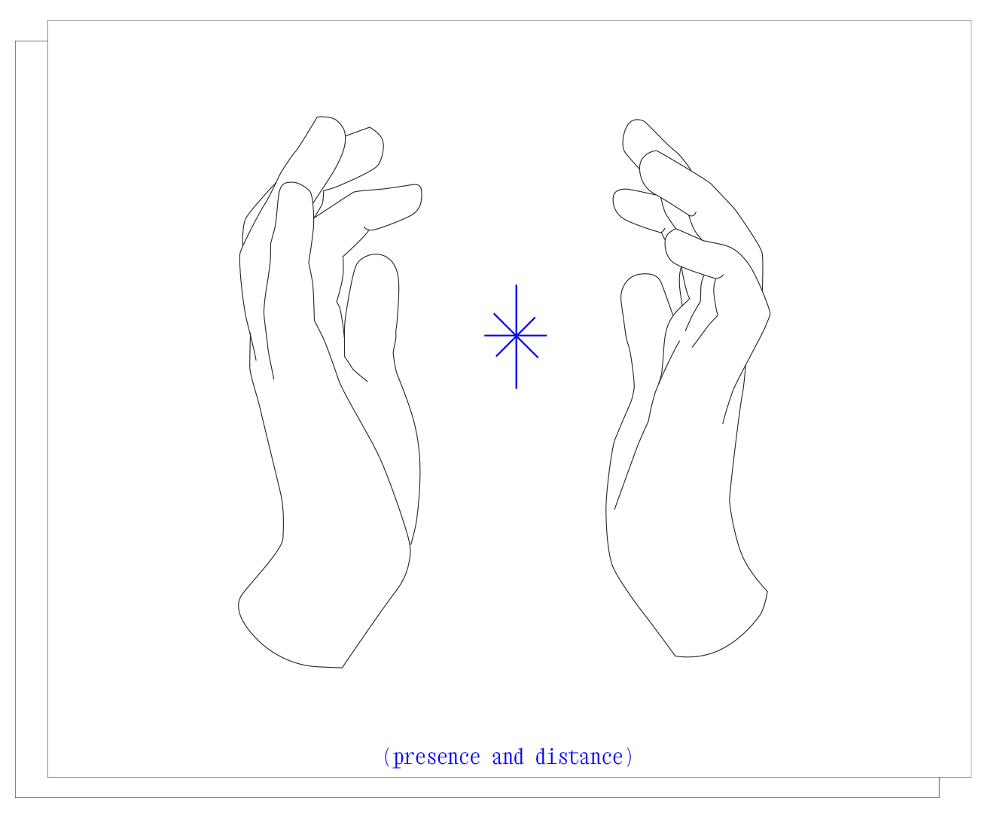
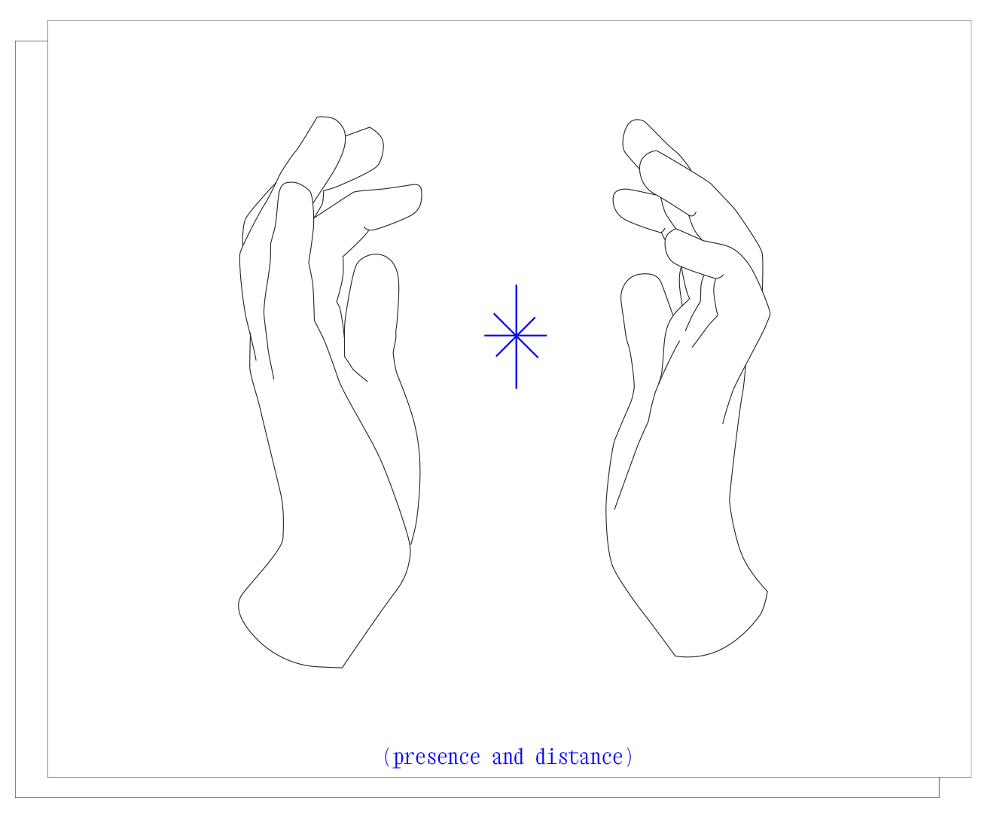
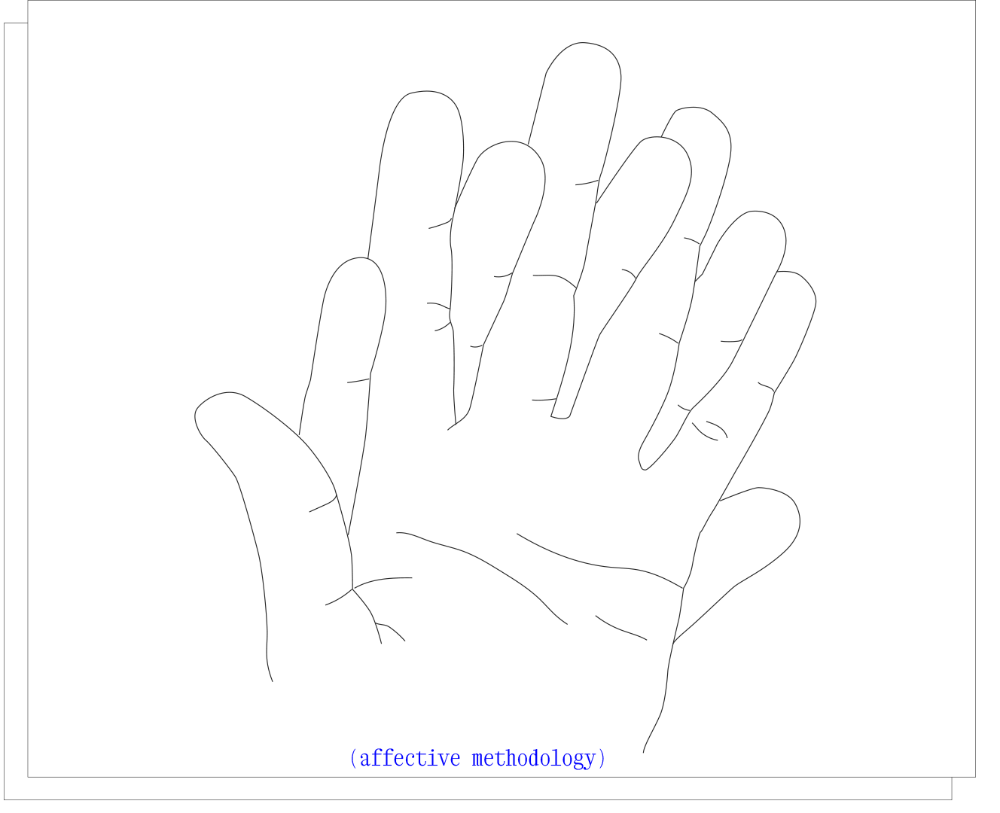
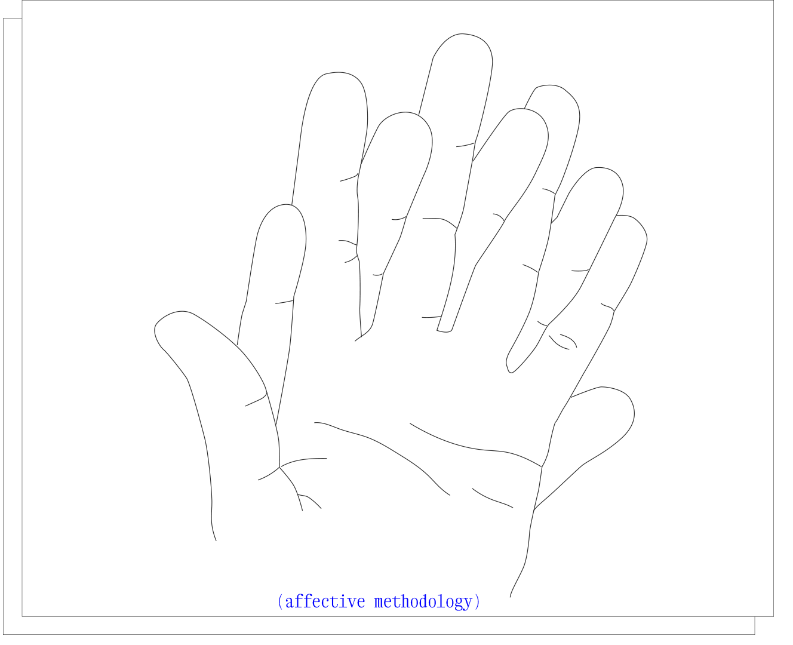
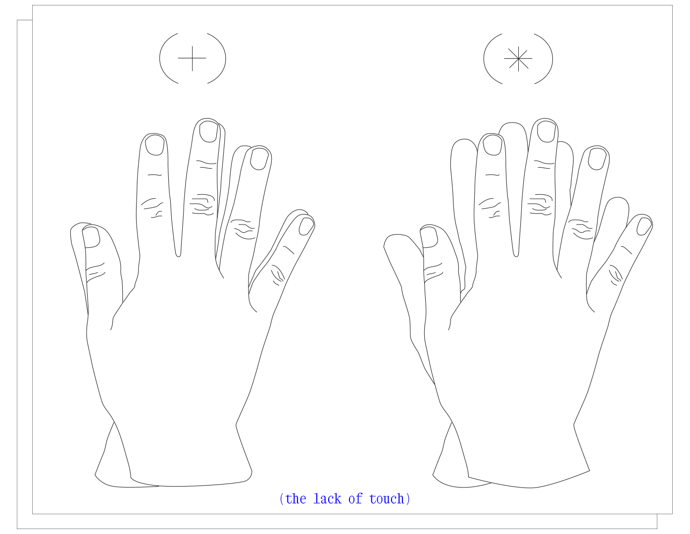

(‘) as a four headed-serpent and as a collaborative project is co-curated, co-researched, co-felt by Daniela Gutiérrez-González, Sebastián Mira, LuisSebastián Sanabria and Jimena Madero.
-01.svg)
apostrophhheee
apostrophe
apóstrofe
is a rhetorical artefact
with four voices that travel in

an online project,
a telematic affect -01.svg)
,
a digital kinning,
a dislocated time,
and a web of bonds -01.svg) 
-01.svg)
.
We have become a metaphorical body, -01.svg)
a serpent with four heads 
,
that takes shape in different iterations
of what this conspiracy is.
A serpent with four heads
,
that takes shape
in this text,
in a conversation 
,
and
sometimes,
in the materialisation
of this conversation,
in a space.
By screaming/whispering/typing
“apostrophhhee”
(un aullido),
I summon the four heads of this serpent,
bringing those who are not here, to this here.
****
I had this dream 
,
To put my body, my mouth, and my voice
to talk about an exhibition that has already
been or has not been, or will never be,
And through the compilation of moments,
conversations, spaces,
all ghosts,
to speak of the painful and bodily action of
traer al distante -01.svg)
,
To speak of the impossibility
of translating
of translating oneself -01.svg)
of approaching
of proximity and contact
of delimiting and projecting
of placing absences
of bringing in body
those
who -01.svg)
conspired with me.
Curate and talk about becoming a node,
Curate and talk about what is invisible in
these processes,
of what it is to entwine the
others (feelings, discourses).
Assuming oneself
as recipient and
medium, reluctantly.
Accept the concern to enunciate without
enunciating this distance, without
pronouncing the remoteness of the
context and oneself. To hold on as best one
can to the bonds , extend and
replicate them.
To summon my ghosts,
through an electronic portal, our silicon 
friend, an interface that allows us to be
here and now, potentially everywhere and
at all times, despite the intermittency
and delay of our geolocation, a couple
of clicks away.
Sitting, here, unwillingly reading for others,
shuddering at my pronounced accent and
lousy diction,
I am that odd
that sometimes appears
in texts when someone else is being
brought in.
I am an apostrophe
, here petrified.
A body that now, right now, is reading for
other bodies
.
Saliva that contains four bodies,
Breath where are these friends who soothe
me with murmurs, texts, poems, and
conversations with characters who are
nothing and everything simultaneously.
A four-headed serpent
.
****
apostrophhheee is an interface
research project that I develop with others
who are not in body here, but who write
with me, they hold me in the distance  ;
;
this interface allows us to pretend and
embrace closeness -01.svg)
, recognising that
we are multiple bodies, simultaneous
and distant .
And this is where the hands  come in,
the hands that touch the other without really touching them.
Hands that recognise the frustration of not-feeling.
Extended towards infinity, a projection of us.
Frustrations 
that recognise themselves in the body (and what they touch).
I was a primera persona del singular who added others to weave a process of addition,
of simulations of closeness.
I was a primera persona del singular who felt from her search and her solitary readings how inescapable the other is.
However lonely a path may be,
I always prefer company
.
****
It all began with a solitary poem, an
experimental video,
from 1988 by Yo Nakajima.
We see a hand,
touching (barely) with the tip of the fingers,
with an outstretched palm,
winter landscapes,
certain objects...
Aprehender con la punta de los dedos.
From this encounter, which moves silently
—like a ghost in a conversation—
we recreate this gesture with a dedication to
the other , -01.svg)
bringing the presence of the one who (for now) is not there.
Alguna vez pasará
Que ya no pueda mirarte
Solo un fantasma de tí
Como una sombra caliente
Return to the plural, to assume the “we”. Or to assume the I(s) in the I.
To assume the "I" of this text as an expanded "I."
To ask who is, who is we-before and after writing it.
(Hacer confuso cuando un yo acaba y el
otro empieza)
****
Conspire.
Maybe without a plot, but always with others.
Not necessarily for others, but with others.
From this gesture of touching/not touching, murmurs then arise with two others and the two of us in this project that has been going on for some time now.
Two others are added to the two that are one.
and we became
a four-headed serpent.
A serpent with four heads
,
that takes shape
in this text,
in a conversation
and
sometimes,
in the materialisation
of this conversation,
in a space.
Serpiente de cuatro cabezas.
This I in this text is an I of four.
****
The process of creating and translating images as a self that is part of other-selves is similar to the operation of immersing oneself in a strong current river— un rio de caudal fuerte.
At first, when one partially enters the river, one tries to speak, shouting, in an effort to distinguish oneself. But one's own voice is indistinguishable in its deafening roar. It is necessary to listen for a while to the noise of the river, to let it stun, to let it saturate. Allow yourself to feel its flow, its rhythm, and its direction. To merge into it.
Where does its voice go? How does it sound? What advice does it bring? (the latter being the most difficult to listen to).
When this sound manages to drown out one's own voice, when the noise of the flow and the cold of the water almost take possession of one's own body, that is when one submerges completely.
It is when one surrenders to its strength.
Submerged, the vertiginous noise of the river becomes more nuanced, and one's own voice takes shape. Curiously, the density of the environment makes it possible to discern between the voices with clarity and reveals the harmony between the external voice and the internal voice -01.svg)
.
Submerged, the flow and direction become more precise, but not as mental clarity, not as solid knowledge. It is more as a sensation, a pulsion. When coming out of the water, like waking from a dream, the clarity disperses, but a slight sensation in the pit of the stomach remains. You've been there, you've heard it, you've known it. So it is not a surprise when, later, you hear the faint murmur of the river again as a distant sound that calls (sensory memory). Even the body feels the shock as it touches the icy water (body memory). The sound marks a flow and a path, the rush of the current signals marks that it is time to move on. The advice becomes evident, and the solutions materialise as we go on.
The process of constructing and translating images is also a process of assuming the selves (the noise of the river - the external voices) into the self (one's own voice).
I listen, I understand, I create, I communicate.
The mercurian work of transmitting a message.
****
As four distant bodies
,
we became a metaphorical being.
We share a body, we have four heads.
We are more than one, other than the one of the individual, and other than the one of the collective.
We moved from the hands to the action of reading together, reading each other, reading what the other has already read , and leaving signs in the texts we were sending each other.
Another form of touch,
Of touching each other.
Being this being with four heads, and no hands,
we became something like an informal study group from the first exercise of closeness. That studies
about feeling,
about inhabiting distance,
about building bridges,
about reaffirming absence,
about impossibility,
instability,
displacement,
delay.
touching at a distance.
touching in spite of distance.
A fuerza de querernos cerca,
a fuerza de desafiar la imposibilidad del tacto,
a esa serpiente metafórica de cuatro cabezas
,
a veces le salen brazos, ocho brazos,
y comprende con la punta de los dedos,
deja rastros con sus manos.
deja marcas en sus textos.
Ocho manos dejan
guías a las otras cabezas.
Instrucciones para moverse
en ríos de caudal fuerte.
****
At first, I thought I was underlining for
myself —for my future self , as I once read in an article— I took each of my books, as I read them, and underlined in them what I wanted to highlight, to remember later, when I no longer had any record of having read them before . To some phrases and verses, I drew sparkles — I thought what I was reading was brilliant; to others, hearts— I felt pangs as my mouth advanced in my reading; to very few, I made comments — almost always laughter, admitting another emotion.
My way of underlining is not a line, not dots in a row; they are waves, like those of some rivers (ríos de caudal fuerte). These waves are the movement of my body and how the texts move me — they make me vibrate, shake me, and make me restless. In a notebook, I make a list of all my underlines, transcribe them, and repeat with my hands the route my eyes have already taken
; this is touch , another form of touch. This list is also an abbreviation of the book. It is not a summary; it is a representative version. They are capsules of time, of mine, of the past. That's more or less how it is when it's about me. Not anymore, now there are four of us, and we share these records. I read, underline, scan, and send the files to the others. They do the same for me
. I read, this time their underlines; I suspect the emotions, I wonder why those words are marked. When we coincide - this happens often - I smile; it is a coincidence to meet in this space that is also the text. That is to say, inside, in the text, we are close -again the illusion of closeness-.
The result of reading each text four times is a new text, also scanned, on which there is the map of our readings, a common, collective map, which gives an account of our affections. This text is evidence that we are in the same place. Or we choose to believe so.
****
Between the hands that pretend to touch through the screen, the text that is a common map-intertwined rivers, and the words that are not heard underwater, something was and is still lost. We have asked ourselves what it is and what it is like, and no answer is precise. We changed the question: how can we give form to the loss, to the absence? If it is not seen, if we only have the presentiment , the sensation, it is not there. The low frequencies of that, what we don't know how to name yet, we feel. We all agree. Low frequencies, is how we decided to call the new-another rehearsal of contact, of affection. We met one day - which was morning in Colombia, and an afternoon in Switzerland, at the same time - and we recorded one of the screens while we speculated who and how it was that that was not there. For that, we had a question, the input, the trigger, a voice that asked us if we were still here, behind the screens, in this text that is being put together in four voices. Yes, yes, yes, yes, we all answered, and then, going off on a tangent, expanding the trajectory of the collective body, we began to make different confessions about absence. Here, touching a part of our body, we said something was missing. There, pointing to the idea of an imaginary space, we agreed that something was no longer there. The conversation was filled with silence. The frequencies varied according to the vividness of the memory, sometimes minimal, weak. The chat closed when the frequency became imperceptible. The recording of our messages and the delayed transmission of that conversation is the negative space of absence; we surround it, eight arms around it, we contain it: in the center is that which we still don't know how to name, which we can't describe, which can't be heard underwater either.
****
apostrophhheee as an interface is the window for those estranged from these four selves,
from this multiplicity creature. It constitutes the place where other others can access and view these compilations of closeness.
There is beauty in containing an infinity on a screen -resizable but not responsive-, in looking at oneself in the reflection of a black mirror, in sharing (alone) the same experience as other people, in accessing a apos
vast amount of places and times , in
being an online presence , in being
available to others, in becoming public, in feeling vulnerable, in welcoming others, in becoming emotion with each modification of the source code , in occupying and inhabiting an architecture for the mind that reverberates in bodies and fits on a laptop.
In this portal, apostrophhheee of absences and closeness, layers of affection are added from time to time, in the form of sets of draggable icons, which emit warmth and shadow when pointed at , which generate a map of the affections contained here, and which register acts of closeness in new windows

.
An unfolding affection.
A negotiation of distances
.
With love,
Sebastián, LuisSebastián, Jimena and Daniela.